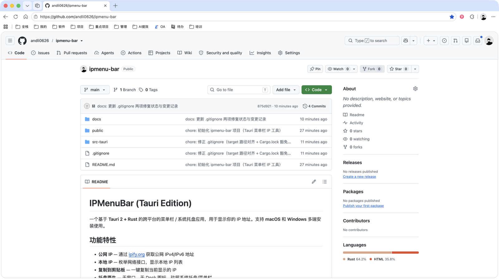
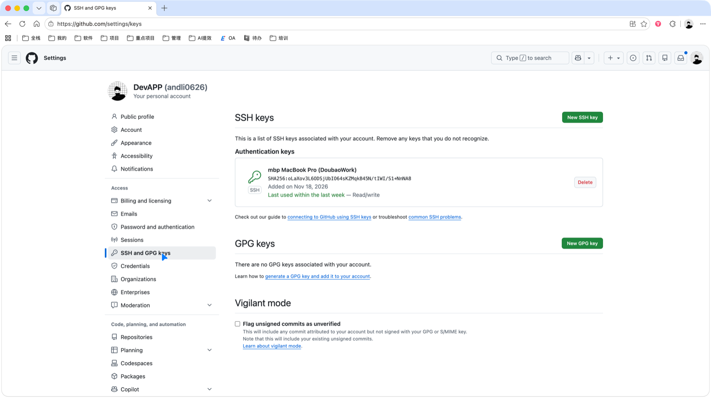
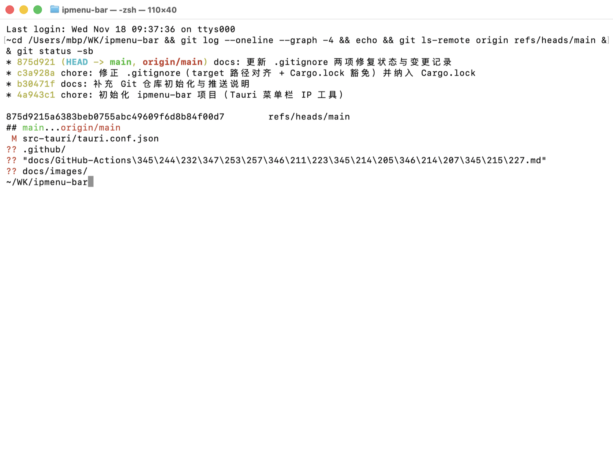

01
本地根本没有版本库
目录里只有源码、图标与文档，没有 .git。也就是说，无论认证是否通畅，都没有任何提交对象可供推送。
$ git status
fatal: not a git repository (or any of the parent directories): .git
这次要做的只是「把本地代码推上去」。真正卡住的是一个 空仓库 + 无凭据 的组合： 本地没有版本库，远程拿不到身份，两条 HTTPS / SSH 通道同时断路。 本文按 问题 → 根因 → 方案 → 操作 → 验证 的顺序记录全过程，并附上真实操作截图与终端回执。
四个字段就能说明这次任务的全部边界：起点、终点、凭据、影响面。
表面看是「推不上去」，实际是三层叠加：没有可推的东西、拿不到身份、身份也没被服务器认领。
目录里只有源码、图标与文档，没有 .git。也就是说，无论认证是否通畅，都没有任何提交对象可供推送。
凭据助手配置为 osxkeychain，但钥匙串里查不到 github.com 条目。Git 只能退回交互输入，而自动化执行时交互被禁用，于是直接失败。
本机已有 ~/.ssh/id_rsa，但账号侧的密钥列表是空的，服务端没有可用来验签的公钥，握手自然被拒。
两条常见路径的成本差异不在于「能不能用」，而在于是否需要长期保管一份明文凭据。
| 路径 | 凭据形态 | 长期成本 | 泄露面 |
|---|---|---|---|
| HTTPS + PAT | 在网页生成访问令牌，写入钥匙串或环境变量 | 令牌有有效期，需要轮换与分发 | 明文令牌可能出现在日志、脚本、聊天记录中 |
| SSH 公钥（采用） | 私钥留在本机，仅公钥上行 | 一次配置长期有效，无需轮换 | 上行的是公钥；私钥不出本机 |
握手过程可以压缩成三步：本机用私钥对挑战签名，GitHub 用已登记的公钥验签，通过后才授权读写。
五步，前四步准备，第五步落地。这里的编号有实际含义——顺序错了任一步都不成立。
指定 main 为初始分支，一次性暂存全部文件（忽略规则同时生效），形成首个提交。
进入 Settings → SSH and GPG keys → New SSH key，标题填机器标识，Key 粘贴 id_rsa.pub 全文（含前缀与末尾主机名）。
只改协议前缀，仓库地址与所有权不变，历史里不会因此产生新提交。
单独跑一次认证测试，避免把「推送失败」误判成代码或仓库问题。
-u 让后续 git push 不必再写分支名。
三张实拍，对应「结果已落地」「身份已登记」「本地与远程一致」三个关键节点。



左右两侧的东西不在同一个地方：一侧是本机仓库状态，一侧是 GitHub 账号与仓库状态。
| 位置 | 变更 |
|---|---|
| 本机 .git | 新建仓库，初始分支 main |
| 本机 remote | 由 https://… 切换为 git@github.com:…，并设置上游 origin/main |
| 本机忽略规则 | 补齐 src-tauri/target/ 与 target/；*.lock 后加入 !Cargo.lock 豁免 |
| 本机锁文件 | src-tauri/Cargo.lock 由「被忽略」改为「入库」 |
| GitHub 账号 | SSH keys 由空变为 1 条（RSA 公钥，读写权限） |
| GitHub 仓库 | 由空仓库变为 main 分支 + 34 个跟踪文件 |
| 分类 | 文件 | 数量 |
|---|---|---|
| Rust 源码 | src-tauri/src/main.rs、lib.rs、ip.rs、tray.rs、build.rs | 5 |
| Tauri 配置 | Cargo.toml、tauri.conf.json、capabilities/default.json | 3 |
| 生成 Schema | src-tauri/gen/schemas/*.json | 5 |
| 应用图标 | src-tauri/icons/（16–1024 各尺寸与 @2x、icon.ico、tray-icon.png） | 14 |
| 前端 | public/index.html | 1 |
| 文档 | README.md、docs/界面截图1.png、docs/界面截图2.png | 3 |
| 版本控制 | .gitignore | 1 |
不看「命令有没有报错」，看三处哈希是否指向同一个提交。
已处理与仍未处理分开列，避免把「记下来」当成「做完了」。